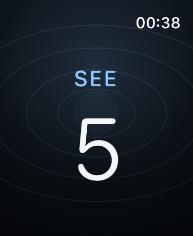
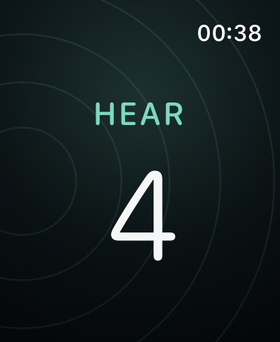
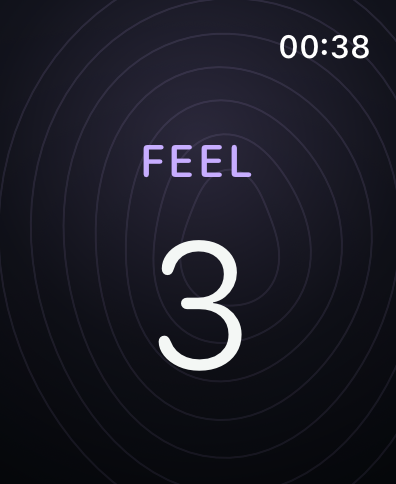
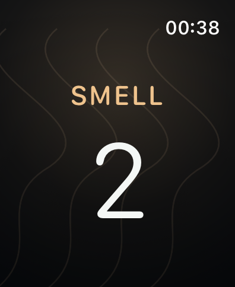
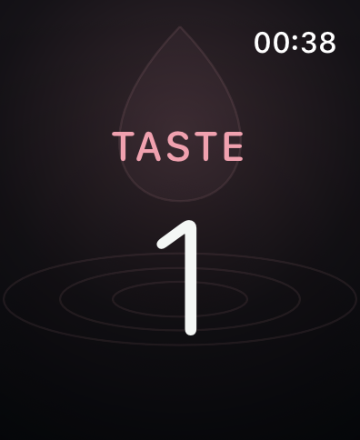

Start from the watch face
One tap on the Ballast complication opens the first step immediately.
For moments of anxiety
Ballast guides the 5-4-3-2-1 senses exercise. Notice 5 things you see, 4 you hear, 3 you feel, 2 you smell, and 1 you taste. Turn the Digital Crown after each item; your watch vibrates and advances automatically.

A concrete example
The idea is simple: move your attention away from racing thoughts and toward what you can see, hear, and feel around you right now.
A window, a mug, your hand, a light, a chair.
Traffic, air conditioning, your breathing, a bird.
Your feet on the floor, the watch, fabric on your skin.
Coffee and soap, for example.
Water, tea, or simply the taste already in your mouth.
After each item, turn the Digital Crown once. The number drops. When it reaches zero, the watch vibrates and the next sense appears.
The method inside the app




How to use Ballast
One tap on the Ballast complication opens the first step immediately.
Follow the word and number, or simply feel the vibration with your eyes closed.
Turn once per item. At zero, Ballast vibrates and advances automatically.
26-second demonstration
In normal use, turn the Digital Crown once for every thing you notice. Tapping the screen performs the same action as a fallback.
Private by design
Ballast has no account, analytics, advertising, health permissions, or backend. The MVP stores no exercise history.
Read the privacy policy